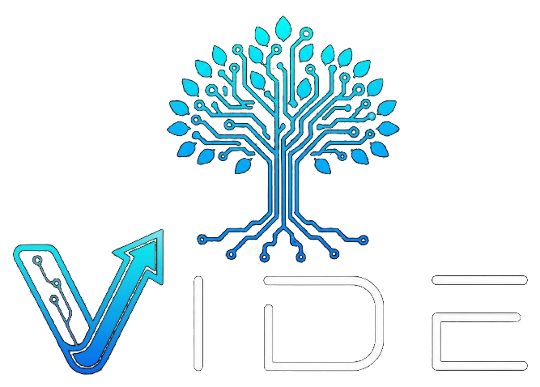

Empresas sérias não precisam de mais cliques vazios. Projetamos o ecossistema que une presença digital de autoridade, atendimento ágil no WhatsApp e auditoria contínua para estancar a perda de oportunidades e aumentar o faturamento.
Auditorias de funil e benchmarks do setor revelam que a estagnação de vendas quase nunca é falha do produto, mas de gargalos invisíveis nos dois momentos mais sensíveis da jornada de compra.
Agências tradicionais entregam peças soltas: um site bonito que não converte ou automações frias que afastam o cliente. A VIDE opera em três dimensões integradas para gerar resultado real.
Auditamos com precisão onde seus contatos silenciam, quais dúvidas travam as negociações e onde o faturamento da sua operação está escapando por falta de acompanhamento.
Implantamos páginas de carregamento instantâneo e infraestrutura de resposta imediata no WhatsApp, garantindo que todo lead qualificado seja atendido com prestígio e agilidade.
Usamos o histórico real das conversas para calibrar mensagens, quebrar objeções frequentes e tornar a sua equipe de vendas cada vez mais afiada para fechar negócios.
Representação viva da rede de dados: correlação em tempo real entre leads recebidos, velocidade de qualificação e receita protegida. Arraste com o cursor para rotacionar no espaço 3D.
Uma esteira de engenharia comercial integrada onde cada agente cuida de uma etapa decisiva para o faturamento do seu negócio.
Converse diretamente com os nossos especialistas e solicite um diagnóstico comercial personalizado para identificar onde o seu negócio pode faturar mais com as soluções da VIDE.